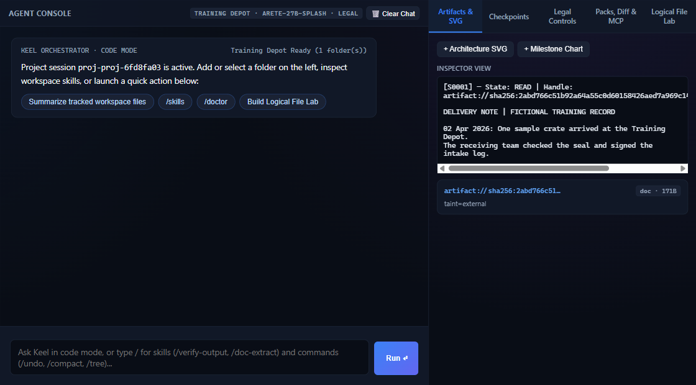
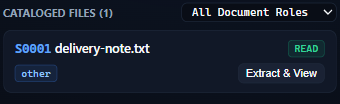

Let the model work through the project, not read it all at once.
Keel is a local workspace for giving a model useful access to a large set of files without putting them all in its prompt. It separates what the model needs now from the material it can inspect or return to later.
Follow the delivery note
How Keel carries file context
A large codebase is a good example. To explain how it works, the model needs to find entry points and follow the implementation, not spend its context reading every asset, test, or generated file. Keel gives it ways to inspect the workspace in steps, while keeping the source material separate from the conversation.
Start with a map of the workspace
Keel can register files by path, role, and fingerprint before extracting their contents. Its Studio prompt starts with a short piece of project guidance, a list of available capabilities, and compact skill and connector indexes. The whole source folder is not in the prompt.
Use a tool to answer a specific question
The model can call a small set of tools to read a file or run a focused inspection, then use the result to decide what to inspect next. Extracted sources can return a short preview and a reference to the stored text. A tool response informs the next turn; it does not have to become a new copy of the repository in the transcript.
Keep the evidence available for later
Keel can store artifacts by content fingerprint so a later step can reopen the same material. In its daemon-backed execution path, large captured outputs return a bounded preview and a reference to the full output. When the compaction code recognizes artifact references or recorded open items, it can carry them forward without replaying the full history.
Use the right path for the task
Studio provides a local interface for project files and model-assisted work. The headless SDK and daemon have their own execution and output handling. The public Python sample only shows source registration and a citation check; it does not ship the full Studio or the prototype search features.
This is a way to use a model’s working context more selectively, including with a small local model. It does not make a different model better at reasoning or guarantee that it will choose the right files. For a consequential review, a person still checks the evidence and the parts of the project the model did not inspect.
The same source ID can appear in two different matters
A source label is a lookup key inside one matter, not a portable reference across the practice. The Studio isolation test loads two different README files in two projects. Each ledger starts at S0001, but each opens only its own file.
Project Alpha
README.md · S0001
Project Alpha unique content.
SHA-256 starts with 6004d315c1db.
Project Beta
README.md · S0001
Project Beta different content.
SHA-256 starts with 5bc3034308bd.
What a search result brings back
In a separate two-document test on the source-bank prototype, a search for Assessments January returns covenant.txt, the bank it came from, the original file’s SHA-256, and this excerpt:
Assessments are due on January 1 each year.
The reviewer can identify and reopen the source without treating the search result as the document itself. This test uses term matching, not a claim about retrieval accuracy. The prototype build and the public Python sample below are separate.
Watch Studio open a source
In the Training Depot project, scan the folder and choose Extract & View on the delivery note. The source ledger and inspector show how Studio opens the record. The ledger lists delivery-note.txt as S0001 and marks it READ. The inspector shows the note itself, including the date and who checked the seal.
A source ID gives a reviewer a place to look. The reviewer still has to read the document before relying on the draft.
Try the separate Python sample
Download the source ZIP and extract it. With Python 3.12 installed, open PowerShell in the folder containing pyproject.toml:
py -3.12 -m venv .venv
.\.venv\Scripts\python -m pip install .
.\.venv\Scripts\python -B -m keel.cli chronology
.\.venv\Scripts\python -B -m keel.inspectorThe CLI pairs a sample delivery date with [S0001 p. 1]. Open the local address printed by the inspector. Check that ID, then change it to S9999 and check again. Only the first ID is in the sample ledger.
Setup may download dependencies. The example runs without a model server and does not import the Studio project pictured here.
From the file list to the source text
These captures show a fictional Training Depot workspace. The file list is the starting point; the inspector is where you read the evidence.

delivery-note.txt as S0001. Extract & View opens the note; READ is the status after extraction.Read the note, not just the label
02 Apr 2026: One sample crate arrived at the Training Depot. The receiving team checked the seal and signed the intake log.
The inspector also shows the stored artifact reference. The short label identifies the source inside this project; the note supplies the date and the reported events.